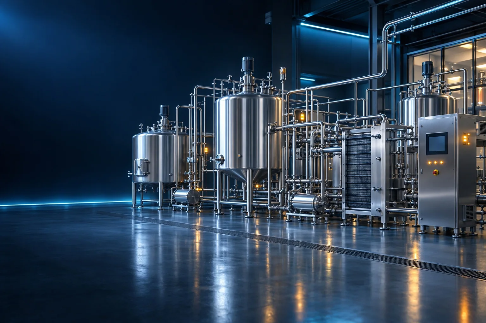
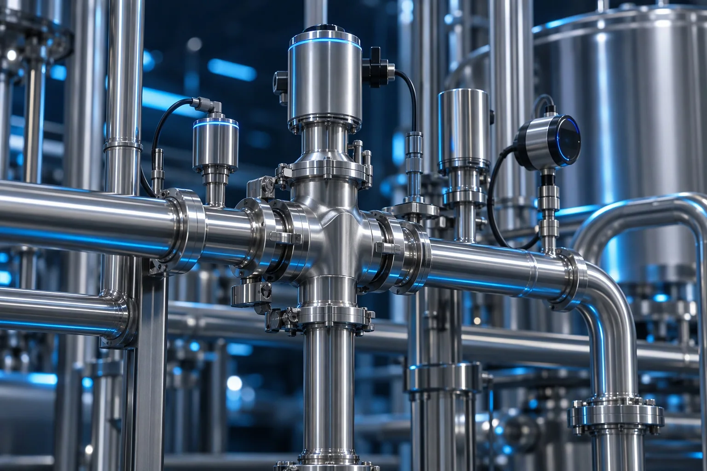

Machine & intégration

INGÉNIERIE PROCESS AUGMENTÉE
La matière
devient maîtrise.
ALPHA Process réunit machines, flux, énergie et intelligence dans une architecture pensée comme un seul système.
AP / SYSTEM 01SCROLL TO DECODE ↓
00.1 MANIFESTE
Une ligne performante ne s’assemble pas.
Elle se compose.
Comme les éléments d’un tableau périodique, chaque fonction possède ses propriétés. ALPHA les organise pour former un ensemble industriel lisible, modulaire et évolutif.
Notre méthode de conception →Flux & hygiène
Commande & données
Ingénierie de A à Z
Étude & assistance
00.2 UNE LIGNE / QUATRE SYSTÈMES
Voir l’ensemble.
Agir au bon endroit.
Explorez des vues indépendantes mais connectées : P&ID, équipements, implantation, pilotage et étude augmentée.

FL / 02
00.3 RESSOURCES
Moins d’impact.
Plus d’intelligence.
Concevoir les échanges et les séquences pour éviter les consommations inutiles.
Rendre visibles les usages et préparer les scénarios de nettoyage à qualifier.
Réduire les transitions et documenter les volumes sans exposer la logique propriétaire.